読み終えた先の人に、筋道を残す
資料は、その場の参加者だけでなく、その先で読む人にも使われる。
作り始める前に「誰の手に渡り、どこで読まれるか」を決める。
見終わった人には、次の資料でまず読み手を確かめ、口頭で省く内容と紙面に残す情報を分け、選んだ理由を目的の近くへ置くという行動を持ち帰ってもらう。
主表現は大きく動く文字・図形。二人のピクトは、受け渡しと問い返しによって説明の因果を支える。全編を通して人物・資料・文字の位置関係を組み替え、読む区間にも大きな画面運動を保つ。
構図のコマ画は仕上がりの固定見本ではない。本文の「伝えること・強める点・留保」を守り、動きの軌道・間・演技・実装は制作側で考える。秒数は目安であり、読解と動作の観察を等速で両立できるよう調整可。ロゴのタイミングは規定を守る。
構成と尺 — 何を伝えるための時間か
| まとまり | 視聴者に伝えること | カット・目安 | この尺を取る理由 |
|---|---|---|---|
| 問いを自分ごとにする | 担当者に通じた資料でも、次の読み手には通じるかを問う。誰が読むかで修正判断が変わる。 | 01–03 0:00–0:22 | 問いを冒頭に置き、読み手の確認まで一息で運ぶ。 |
| 同じ資料で、なぜ止まるか | 共有された経緯と口頭の補足が会議の外では失われ、担当者も説明できなくなる因果を伝える。 | 04–07 0:22–0:57 | 二人の受け渡しと問い返しを見る時間を取る。 |
| 持ち帰った先で読めるようにする | 用語に説明を足す。発表で省く内容と、資料に残す情報を分ける。 | 08–10 0:57–1:26 | 留保と二つの使い方の比較を読み取る。 |
| 理由を、理解する順に置く | 結論の前提となる選択理由を、目的のそばへ置くという編集行動を覚えてもらう。 | 11–12 1:26–1:49 | 不足→並べ替えを、後半の大きな見せ場にする。 |
| 読み手の疑問を先回りする | 想定質問から追記と受け答えを準備し、色や線の意味も説明できる状態にする。 | 13–14 1:49–2:13 | 質問の連鎖と、必要な区別の比較を観察する。 |
| 次に作る資料へ持ち帰る | 記録や報告にも応用し、「読む人を先に決める」という行動で締める。 | 15 2:13–2:28 | 応用例から結論へ。最後の行動文を読ませる。 |
| 制作表示 | 本編のあとに制作表示を置く。 | 16 2:28–2:33 | 規定動作4秒＋完成形約1秒。 |
文字数だけで秒数を決めない。前半は「受け取る→疑問が出る→答えられない」、後半は「理由を近づける→読み進められる」の動作も見える時間を取る。最終尺は制作側が代表区間の等速試作で判断する。
キャラクター参照 — 同じ二人で論旨をつなぐ
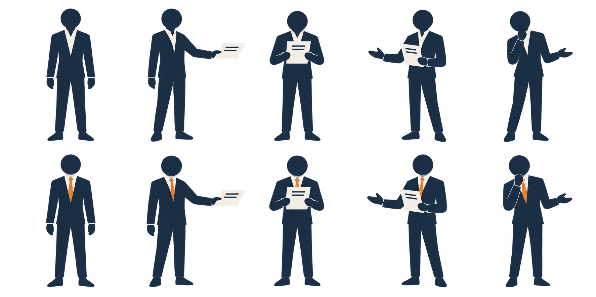
担当者＝ネクタイなし。上司＝オレンジのネクタイ。襟の抜きと一体感のある肩・手足を持つ濃紺のピクトグラム。上段が担当者、下段が上司。左から基本・渡す・読む・問い返す・考えるの5姿勢。同じ体格・頭身を保つ。役職はネクタイと登場時のラベルで区別する。静止コマと使用する動画素材の人物は、この参照に統一する。
担当者は資料を届け、問いを受け、必要な説明を準備する。上司は受け取り、読み、自然に問い返す。どちらも敵役にせず、戸惑いは首・腕・体の向きで表す。顔の描き込みや年齢・性別の強調は不要。人物の識別点は保ち、姿勢やタイミングは制作側が組み立てる。
共通リファレンス：共通キャラクター参照（原寸・可逆WebP）。コンテの人物もこの画像の対応する姿勢を使用。合成・編集でも、この形状と識別点を保つ。

使用する動画素材
以下の3種類の動画素材を使用する。編集用は背景透過・無音のWebM、各6秒。基本は1.5倍速（約4秒）とし、文字の読みやすさと動作の区切りに合わせて調整する。
| 場面・編集用素材 | 使う動作と伝えること | 文字・図形との組み合わせ |
|---|---|---|
| 01・05 受け渡し | 担当者が資料を渡し、上司が受け取って読む。同じ資料が別の読み手へ届くことを示す。原本0–6秒を使用可能。 | 二人の識別と手元を見せ、問いの文字を重ねる領域を確保する。 |
| 06・07 問い返し・応答 | 上司が問い返し、担当者が答えようとして考える。原本0–2.5秒を06、2.5–6秒を07の目安に使う。 | 「なぜ？」と理由欄の空白を合成し、動作と紙面の不足をつなぐ。 |
| 13 読み手の側へ | 担当者が机の反対側へ移り、同じ資料を読み直す。原本0–6秒を基本1.5倍速で使用する。 | 「自分が初めて聞くなら？」から、疑問を「資料に足す一行」「当日備える答え」の二つへ展開する。 |
素材は1280×720・24fps。1920×1080・30fpsの本編に合わせて配置する。手と紙を文字で隠さず、頭・靴が切れない余白を保つ。輪郭が荒れるほど極端に拡大せず、紙面へ寄る場面では編集可能な文字・図形へつなぐ。
透過WebMに対応しない編集環境では、緑背景の原本をキーイングして使用する：受け渡しの原本 ／ 問い返しの原本 ／ 読み直しの原本。原本に含まれる音声は本編へ使用しない。
絵コンテの静止コマは構図・動作の意図を示す参考。動画は上記ファイルを使い、画面全体の動き・文字・図形を組み合わせて仕上げる。
配色と記号
本編の基調は明るい紙色 #f8fafb と濃紺 #23364b。影や薄色は補助に使い、本文の文字を薄くしない。
| 表示 | 意味 |
|---|---|
| オレンジのネクタイ | 上司の識別。身長による序列は付けない。 |
| 青緑の吹き出し | 口頭の説明・補足。 |
| 黄色の面・囲み | 読むために残す情報、または「今回の範囲」。文言と形でも区別する。 |
| 紫の問い | 読み手の引っかかり。叱責や否定ではない。 |
| 灰色の枠／破線 | 枠＝会議の場。理由欄の破線＝不足。比較の前段の意味のない線種差はカット14内だけ。 |
カット表・絵コンテ
問いを自分ごとにする
その上司にも、通じる？
0:00–0:08 目安 8秒
担当者に説明できたことと、次の読み手に伝わることは別だと、冒頭から自分の資料に引き寄せてもらう。
強める点・留保：「上司が読んでも」を問いの核にする。怖い上司の物語にはしない。

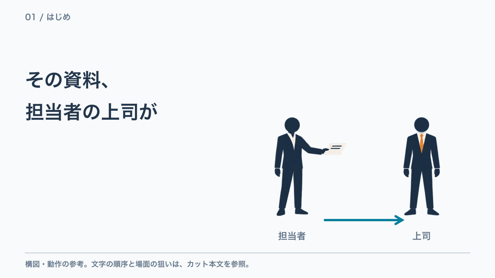

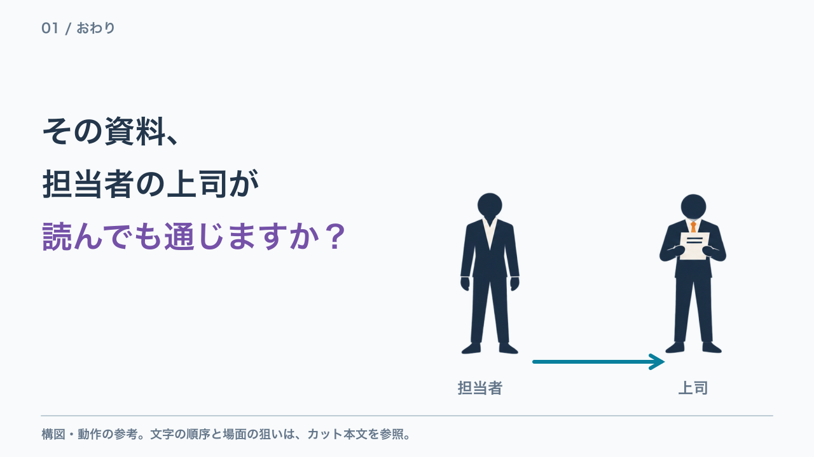
画面全体の動き・強さ
資料の受け渡しと同じ方向に、二人・大きな文字・背景の面を横へ運ぶ。受け取る拍で画面の重心が上司へ移る。
次へ渡すもの
上司の手元の紙を大きくしてレビューの場へつなぐ。
制作側が考えて決めるところ
受け取って読み始める間、問いの文字の回り込み方。
問いを自分ごとにする
レビューは、読み手の確認から
0:08–0:15 目安 7秒
著者のレビューの入口を示す。時間がない場面でも、最初に読む相手を確かめるという行動につなげる。
強める点・留保：急ぎの演出より「まず読み手を聞く」を強める。

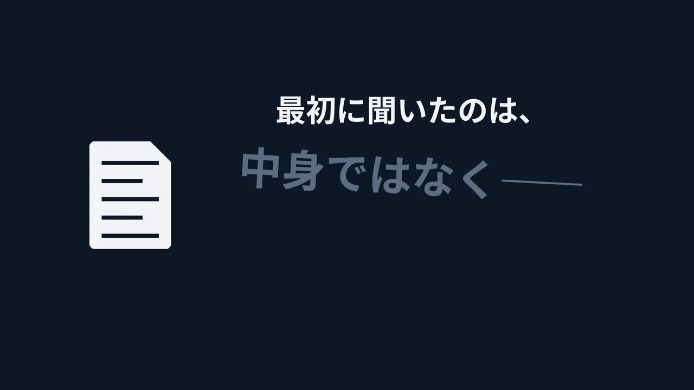

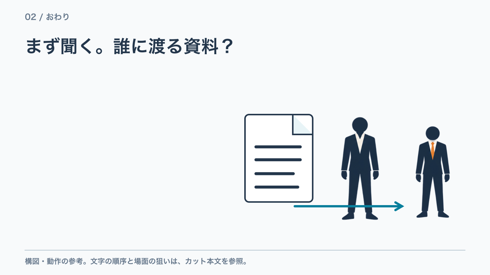
画面の言葉
- レビューしてほしい。
- まず聞く。誰に渡る資料？
使うもの
共通ピクト、資料・札・線・文字。別途の写真・動画素材は使わない。
画面全体の動き・強さ
机の資料から大きく引き、行き先の人物が画面へ滑り込む。問いの塊が時計を押し出す。
次へ渡すもの
問いの「誰」を次のカットの読み手の領域に渡す。
制作側が考えて決めるところ
時計や机の省略度、問いの入り方。
問いを自分ごとにする
読み手が決まると、直す箇所が見える
0:15–0:22 目安 7秒
読み手の確認が、抽象的な心得ではなく資料の修正判断を変えることを見せる。
強める点・留保：全部の欠陥が自動で解決する描写にはしない。

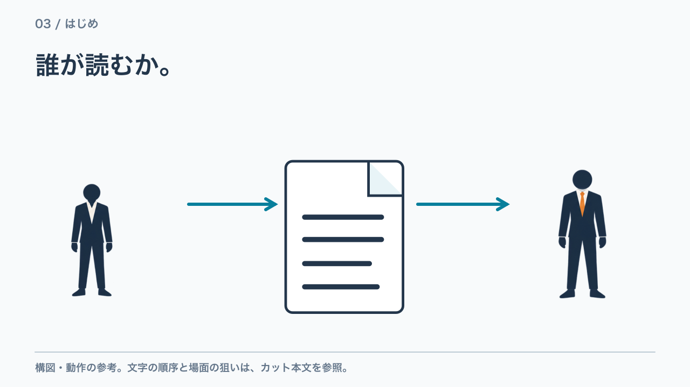

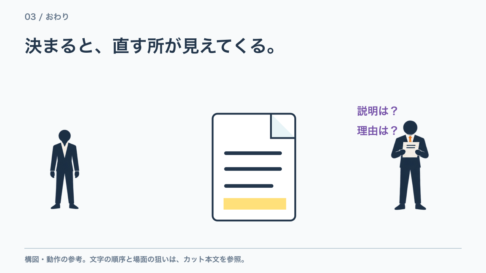
画面の言葉
- 誰が読むか。
- 決まると、直す所が見えてくる。
使うもの
共通ピクト、資料・札・線・文字。別途の写真・動画素材は使わない。
画面全体の動き・強さ
読み手の側へ紙面ごと回り込み、紙の中へ大きく寄る。印と文字のまとまりが次の構図を作る。
次へ渡すもの
印の一つが会議室の吹き出しへ広がる。
制作側が考えて決めるところ
読み手の選び方と紙面の印の形。
同じ資料で、なぜ止まるか
その場には、前提と言葉がある
0:22–0:30 目安 8秒
同じ資料が会議では通じる理由は、紙面だけでなく共有された経緯と口頭の補足にあると伝える。
強める点・留保：参加者が分かることを能力の高さに結びつけない。

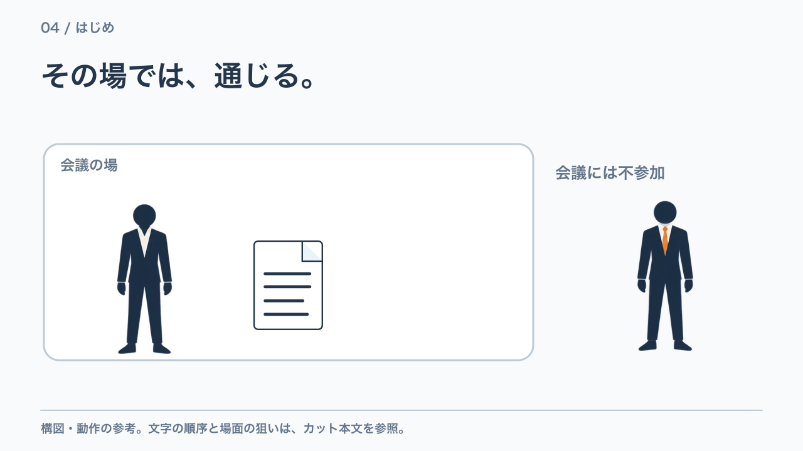

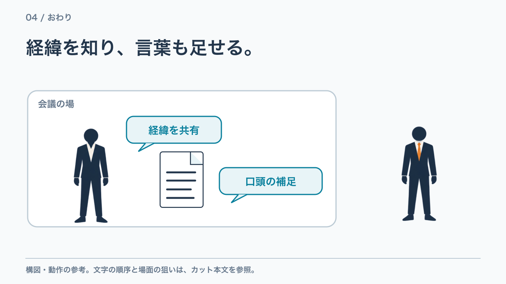
画面の言葉
- その場では、通じる。
- 経緯を知り、言葉も足せる。
使うもの
共通ピクト、資料・札・線・文字。別途の写真・動画素材は使わない。
画面全体の動き・強さ
会議室の枠が大きくせり出し、補足の吹き出しが紙面の空白を越えて広がる。画面全体も横へ流れる。
次へ渡すもの
資料だけが枠を越える動作につなぐ。
制作側が考えて決めるところ
会議の人数の省略、補足が広がるリズム。
同じ資料で、なぜ止まるか
会議の外へ持ち帰る
0:30–0:38 目安 8秒
口頭の補足が一緒についていかない状況を、同じ担当者と上司の受け渡しで具体化する。
強める点・留保：すべての資料が上へ上がるとは断定しない。「とは限らない」を残す。

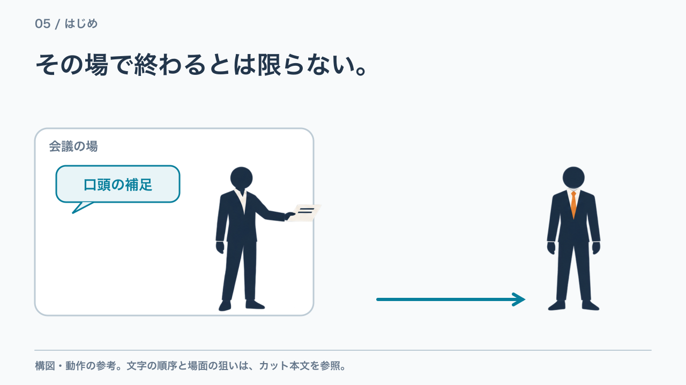

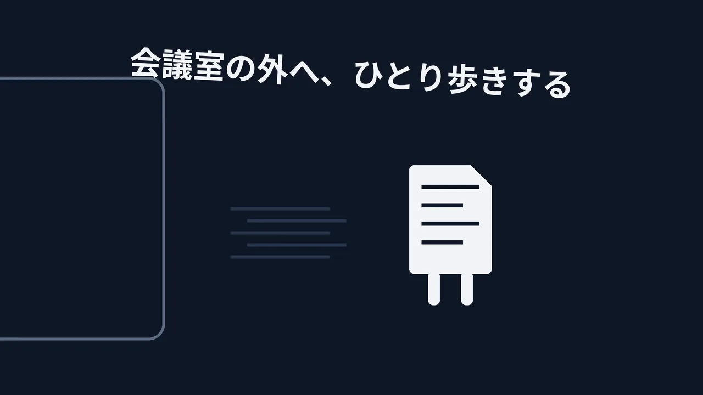
画面全体の動き・強さ
二人の受け渡しを中心に、会議の面が大きく後退し、読む場が手前へ展開する。腕だけでなく空間も動く。
次へ渡すもの
渡った紙面の空白へ寄って次の疑問へ。
制作側が考えて決めるところ
歩数や渡し方、カメラの軌道。
同じ資料で、なぜ止まるか
「なぜ？」が紙にない
0:38–0:47 目安 9秒
上司に不足しているのは説明の前提であると示し、後半の「選んだ理由」へ問題をつなぐ。
強める点・留保：上司を無知・威圧的に描かず、自然な疑問を一つだけ置く。

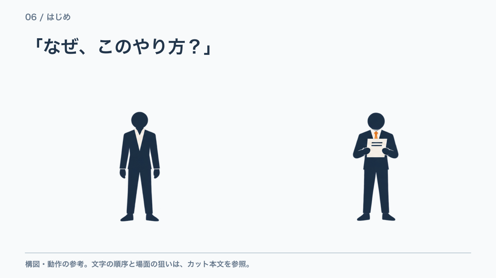

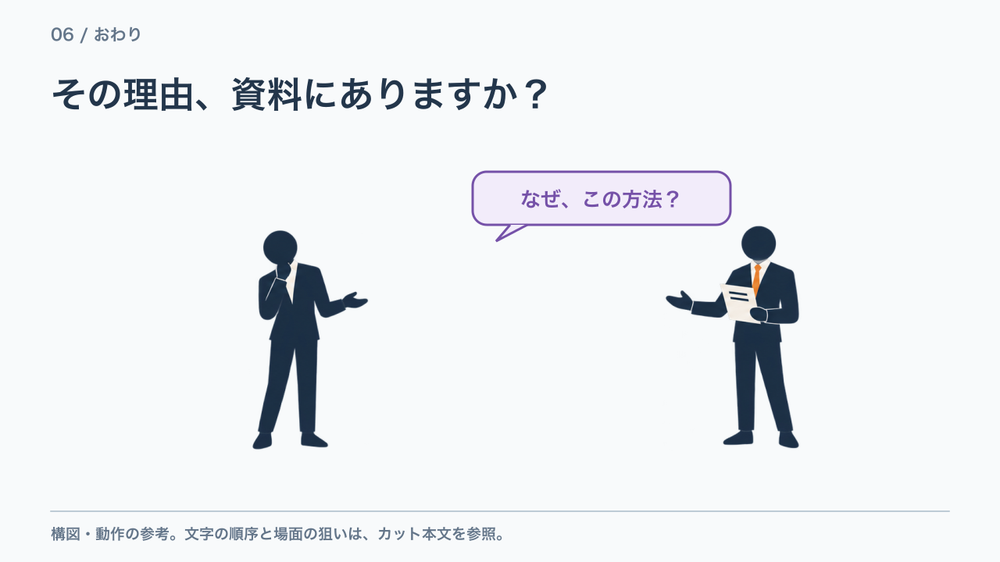
画面全体の動き・強さ
人物の問い返しから紙面へ大きく寄り、問いが空白の周囲を回り込む。文字を読む間も紙と構図を展開する。
次へ渡すもの
問いを受けた担当者へ画面の重心を戻す。
制作側が考えて決めるところ
指す・首を傾けるなど、問いが伝わる姿勢と間。
同じ資料で、なぜ止まるか
欠けがあると、担当者も困る
0:47–0:57 目安 10秒
読み手の疑問が解けないと、成果が先へ伝わらない。担当者の説明を資料が支える必要があると腹落ちさせる。
強める点・留保：担当者を責めず、紙面の不足を問題の中心に置く。

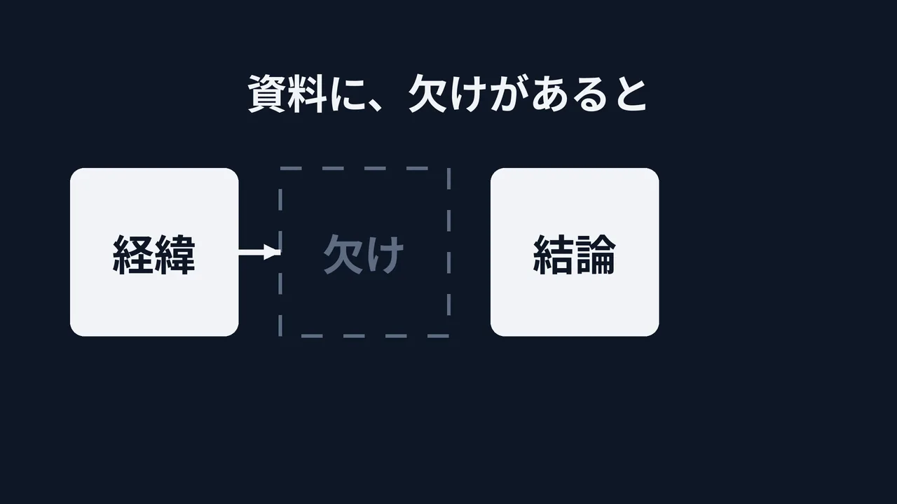

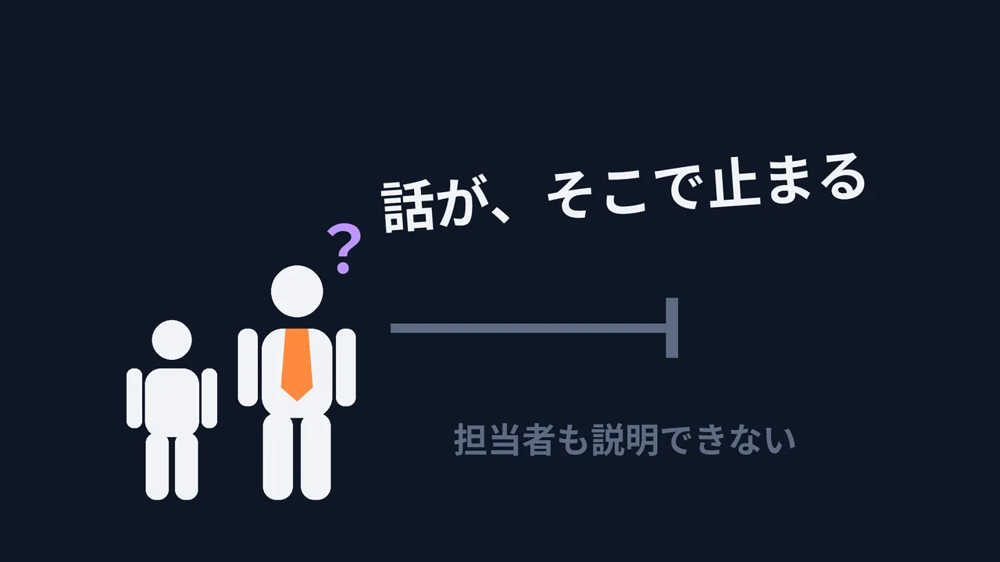
画面全体の動き・強さ
説明する身振りと文字の流れが空白でつまずく。短い引っかかりの後は、欠けの拡大・二人の再配置で動きを引き継ぐ。
次へ渡すもの
空白に足す一行を、次の用語説明の札へ。
制作側が考えて決めるところ
言いよどみの長さと、線がつまずく表現。長い静止にはしない。
持ち帰った先で読めるようにする
用語に、一言そえる
0:57–1:07 目安 10秒
専門用語を読み手も知っていると決めつけず、補足なしでも理解できる手がかりを紙に置く。
強める点・留保：役職で知識を決めつけない。「とは限らない」を読む時間を確保。

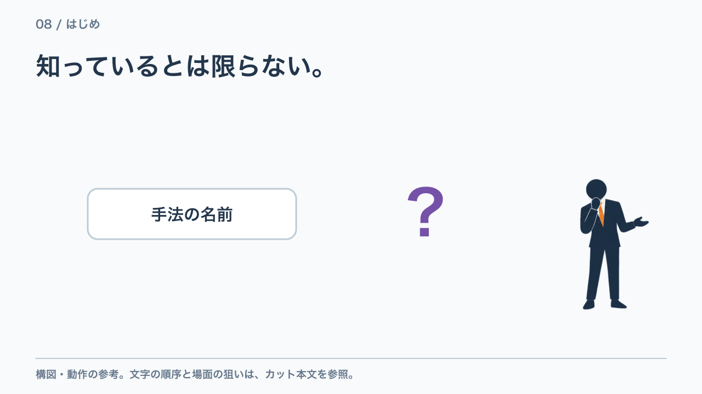

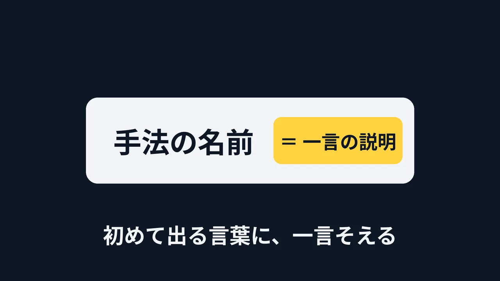
画面の言葉
- 知っているとは限らない。
- 初めて出る言葉に、一言そえる。
使うもの
共通ピクト、資料・札・線・文字。別途の写真・動画素材は使わない。
画面全体の動き・強さ
孤立した用語の札を大きく展開し、説明の面が横から連結する。二人は紙面の端に回り込み、読む線を支える。
次へ渡すもの
残した説明の札を、飛ばすページの比較へ送る。
制作側が考えて決めるところ
具体用語を増やさずに補足を見せる図形の形。
持ち帰った先で読めるようにする
話さないページも、消さなくていい
1:07–1:14 目安 7秒
資料の補足を増やすことが、発表を冗長にすることとは違うと伝える。
強める点・留保：何でも残すのではなく、後の読み手に必要な情報を残す。

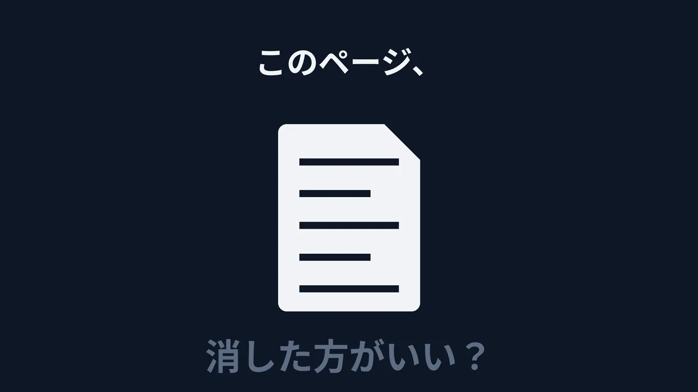

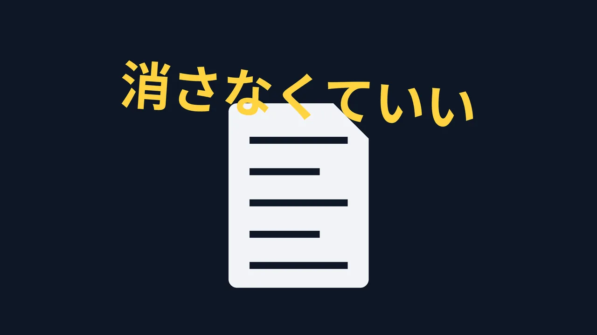
画面の言葉
- 知っている相手なら、説明は飛ばせる。
- 必要なページまで、消さなくていい。
使うもの
共通ピクト、資料・札・線・文字。別途の写真・動画素材は使わない。
画面全体の動き・強さ
カメラが話す流れとともに頁の束を大きく飛び越え、次の頁へ進む。引いた瞬間、飛ばした頁も束に残っていると分かる。残す頁を手前へ起こし、その面が次の比較画面を開く。
次へ渡すもの
口頭の線と紙面の二系統を比較画面へ。
制作側が考えて決めるところ
ページを飛ばす表現、紙面の展開方法。
持ち帰った先で読めるようにする
話す量と、残す情報を分ける
1:14–1:26 目安 12秒
この作品の第一の実践を、同じ資料の二つの使われ方として覚えてもらう。
強める点・留保：「削る」と「残す」の対象を取り違えない。

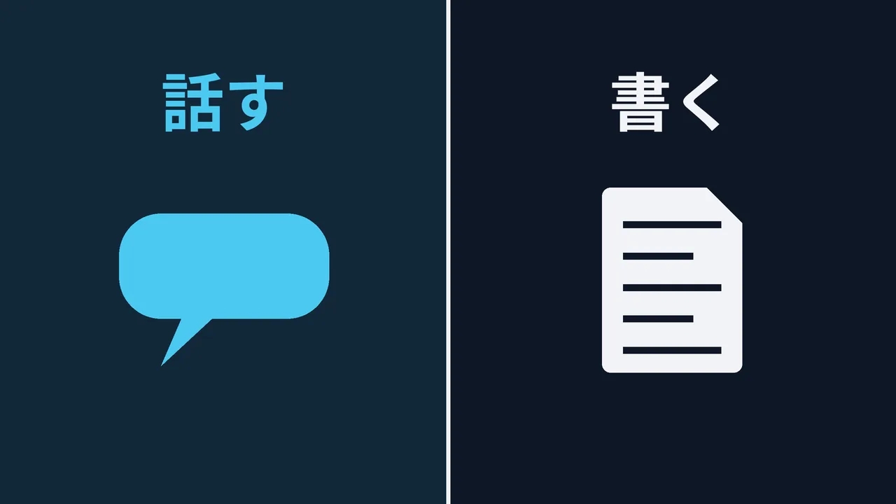

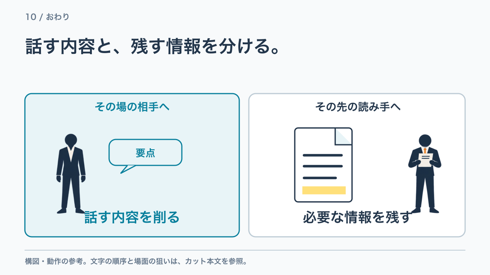
画面の言葉
- 話す内容は、その場に合わせて削る。
- 資料には、その先の読み手に必要な情報を残す。
使うもの
共通ピクト、資料・札・線・文字。別途の写真・動画素材は使わない。
画面全体の動き・強さ
口頭の場と持ち帰って読む場を、奥行きのある二つの空間として開く。一方の言葉の塊は圧縮され、もう一方の紙面は手前へ展開する。カメラと人物も両空間をつなぐように動き、削る対象と残す対象を同時に見せる。
次へ渡すもの
右の「理由」の欄へ寄り、後半の見せ場へ。
制作側が考えて決めるところ
左右を固定する必要はない。比較の同時性と対象の区別を保つ。
理由を、理解する順に置く
選択の裏にある理由も書く
1:26–1:37 目安 11秒
結論があっても選択の理由がないと、読み手は先へ進みにくいと示す。
強める点・留保：作り手は口頭では理由を説明していた。考えていない人として描かない。

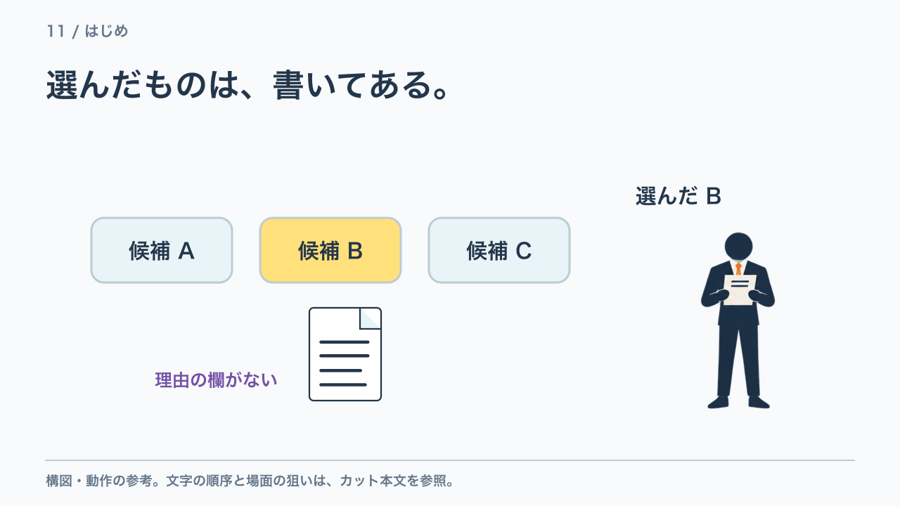

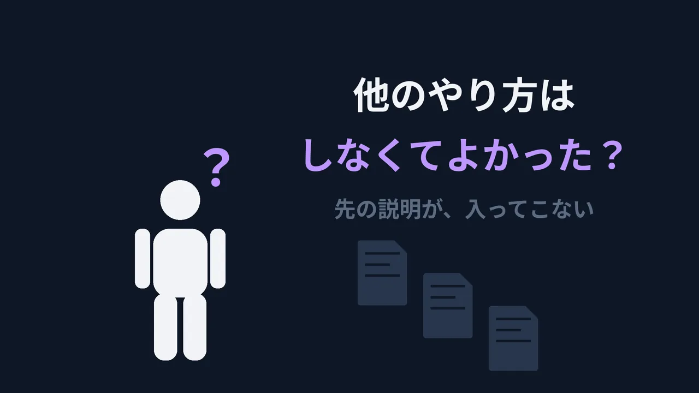
画面の言葉
- 選んだものは、書いてある。
- でも、選んだ理由がない。
- 「他のやり方は？」が残る。
使うもの
共通ピクト、資料・札・線・文字。別途の写真・動画素材は使わない。
画面全体の動き・強さ
候補の面が二人の周りを大きく巡る。Bが紙へ収まり、残った疑問の塊が流れる頁の前へ回り込む。
次へ渡すもの
疑問の塊を「選んだ理由」の札へ変える。
制作側が考えて決めるところ
候補の巡回や紙面の流し方。
理由を、理解する順に置く
目的のそばに、理由を置く
1:37–1:49 目安 12秒
何を足すかだけでなく、目的のすぐ近くへ置くという編集行動を伝える。
強める点・留保：第一の見せ場。理由が近づいて筋道がつながる瞬間を強くする。納得や承認が必ず得られる描写にはしない。

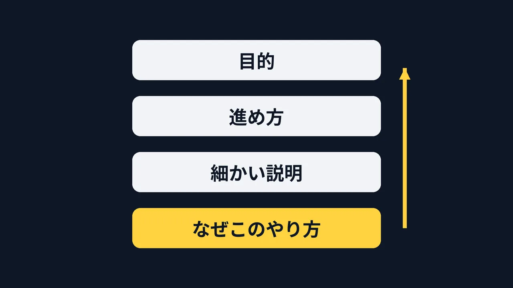

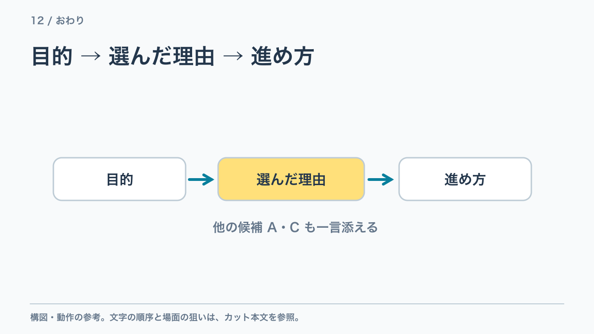
画面の言葉
- 目的 → 選んだ理由 → 進め方
- 他の候補も、一言。
使うもの
共通ピクト、資料・札・線・文字。別途の写真・動画素材は使わない。
画面全体の動き・強さ
離れた理由の札がカメラの近くを大きく横断し、目的の隣へ入る勢いで紙面全体を組み替える。カメラもその札を追い、着地後は目的→理由→進め方の読める角度へ回る。連結線が順に伸び、二人が同じ筋道を追える構図へ。
次へ渡すもの
理由の札を「自分なら何を聞くか」の視点へ引き継ぐ。
制作側が考えて決めるところ
札の軌道、接続のアクセント、人物の反応。
読み手の疑問を先回りする
聞く側に立って、質問を用意する
1:49–2:02 目安 13秒
想定質問を無限に書き足すのではなく、自分が引っかかる所から資料への追記と受け答えの準備を分ける。
強める点・留保：実際に質問されるかは分からない。すべての問いを本文へ詰め込まない。

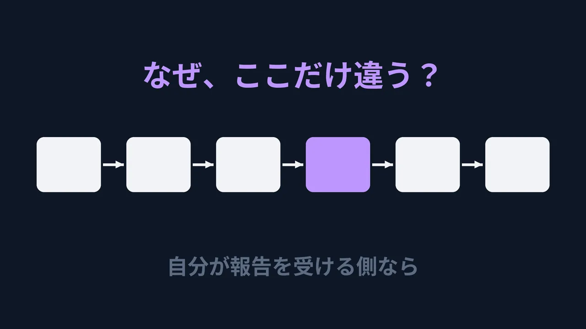

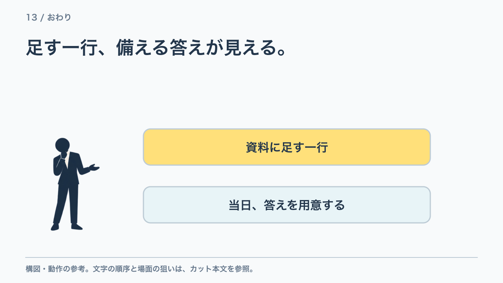
画面の言葉
- 自分が初めて聞くなら？
- 「なぜ、ここだけ違う？」「境目は？」
- 足す一行、備える答えが見える。
使うもの
共通ピクト、資料・札・線・文字。読み手の側へ回って読み直す編集用透過動画を使用する。カット13の透過動画と使用区間・合成の注意を参照。
画面全体の動き・強さ
担当者が机の反対側へ移り、同じ資料を読み直す短い人物動画を前半に置く。人物の移動と同じ向きに画面の重心を運び、気づいて手が止まる拍で疑問の文字が前景へ出る。その問いが斜めに連鎖し、最後は「資料に足す一行」「当日備える答え」の二つの面へ開く。
次へ渡すもの
「なぜ違う？」の問いを、図の色・線の違いへ渡す。
制作側が考えて決めるところ
人物素材の再生速度、質問の間と振り分けの見せ方。
読み手の疑問を先回りする
色と線にも、理由を持たせる
2:02–2:13 目安 11秒
色や線も読み手への説明であり、必要な区別と無意味な違いを分けると伝える。
強める点・留保：黄色を万能の正解にしない。「今回の範囲」のラベルも併用する。

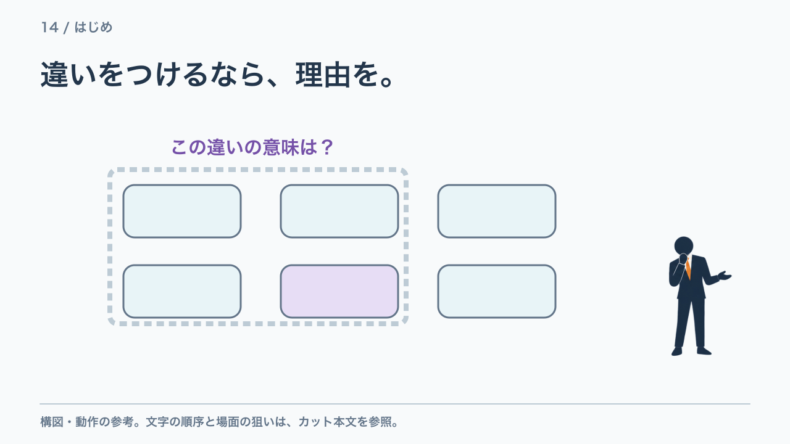

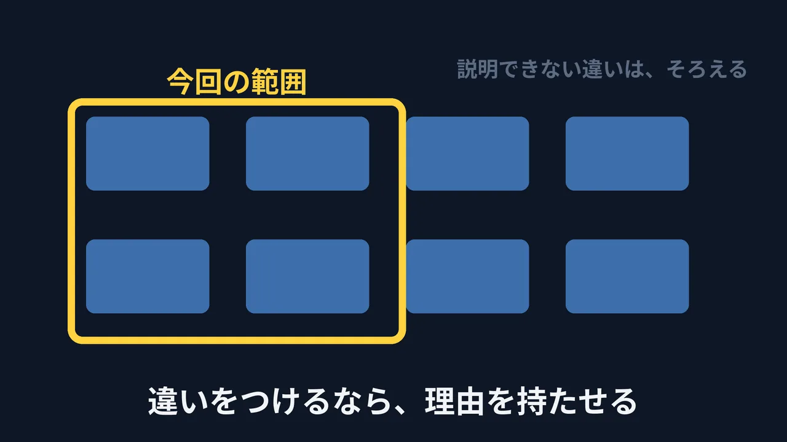
画面の言葉
- 違いをつけるなら、理由を。
- 意味のある範囲は区別し、
- 説明できない違いは、そろえる。
使うもの
共通ピクト、資料・札・線・文字。別途の写真・動画素材は使わない。
画面全体の動き・強さ
図を画面いっぱいに押し広げ、余計な差がまとまる一方、必要な境界が大きく描かれる。文字と図をまとめて次の資料の面へ。
次へ渡すもの
整った図が記録・報告のカードへ変わる。
制作側が考えて決めるところ
比較の重ね方、囲みの描画方法。
次に作る資料へ持ち帰る
資料も、記録も、報告も
2:13–2:28 目安 15秒
記録の「あれ・それ」や作業記録も、場の外の人が使える形へ変えるという共通原則で結び、次の資料作成に持ち帰ってもらう。
強める点・留保：「資料を配れば合意できる」で終えず、「読み手を先に決める」という行動で締める。

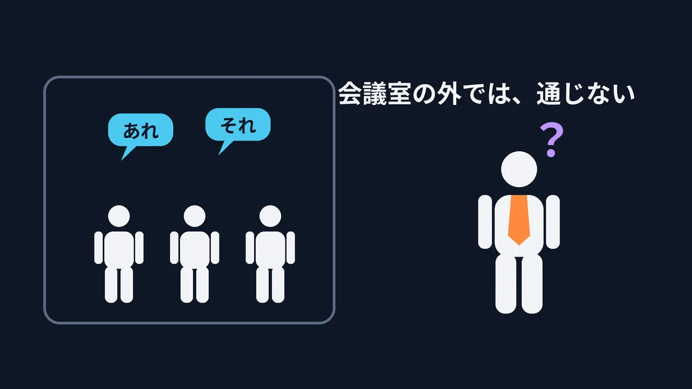

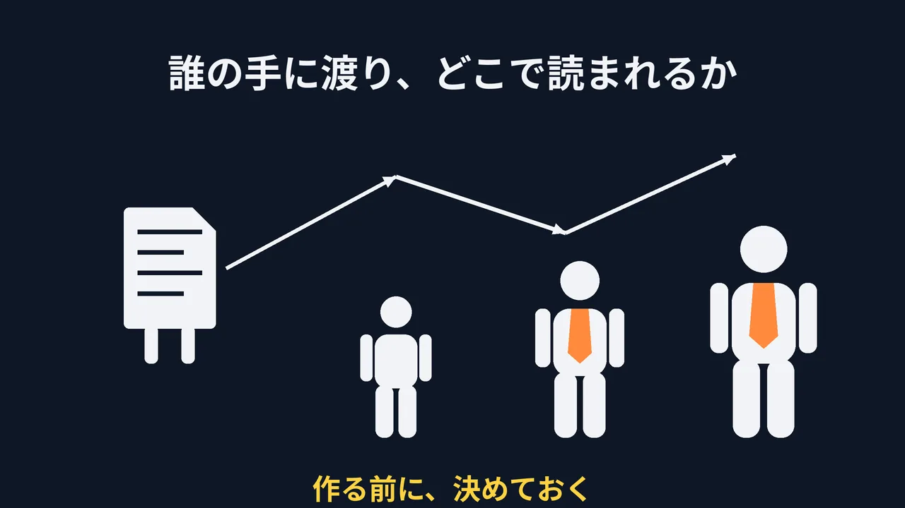
画面の言葉
- 記録も、報告も。
- 誰の手に渡り、どこで読まれるか。
- 作る前に、決めておく。
使うもの
共通ピクト、資料・札・線・文字。別途の写真・動画素材は使わない。
画面全体の動き・強さ
二人の間を通る記録と報告の面を、大きくめくるように転換する。終盤も問いの文字と人物の配置を組み替え、紙面の面がロゴ背景を開く。
次へ渡すもの
本編の要素をすべて払い、ライム一色の正規ロゴ画面へ。
制作側が考えて決めるところ
記録と報告の切替の間、締めの文字の組み方。
制作表示
エンドロゴ
2:28–2:33 目安 5秒
本編の結論のあとに制作表示を読み取れる状態で置く。
強める点・留保：本編の言葉と人物を重ねず、ロゴの形・色・比率を守る。


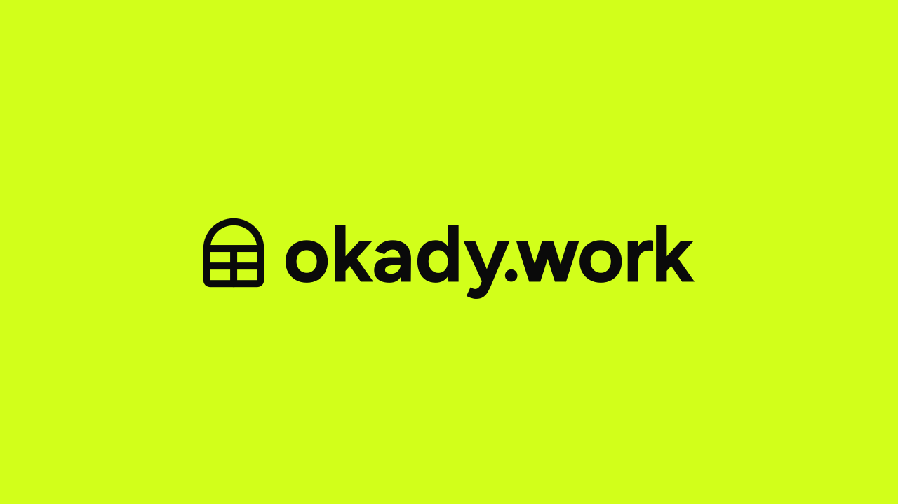

画面全体の動き・強さ
0–2.6秒の o の落下・バウンド、2.6–3.2秒の左スライド、3.0–4.0秒の .work 出現をフレーム時刻で再現する。
次へ渡すもの
BGMもロゴ区間の終わりで収束。
制作側が考えて決めるところ
本編から背景が開く切替。ロゴ自体は規定どおり。
音楽・音声の方向
軽快だが、ふざけない。明快なドラムと動くベース、短い鍵盤・プラック系のアクセント。目安112–124 BPMの拍感で、受け渡し・問い・札の組み替えを支える。遅いアンビエントに映像を合わせて弱めない。
01–03で問いを立て、04–07で対比と短い引っかかり、08–10で軽く展開、11–12で理由がつながる見せ場、13–15で前進して結論へ。長い無音は置かず、07の「止まる」に短い音の抜きを使うかは制作側が判断。16のロゴ終了まで覆い、最後の余韻が途中で切れないよう収める。
作曲・選定・尺編集は制作側。新しい曲を文字・図形の試作に合わせて判断する。ナレーションは今回の企画では追加しない。人物動画は無音、衣擦れなどの写実音は必須にしない。
制作側に委ねる範囲と、完成条件
守るものは、各カットの目的、画面文言の意味と留保、二人の同一性、可読性と強い画面運動、最後の正規ロゴ。委ねるものは、カメラ軌道、座標・角度・イージング、人物素材の再生速度・間、文字の組み方、尺の配分、音の同期。three.jsを推奨し、別手段を選ぶ場合は理由を短く記録する。Remotionでは全動作をフレーム時刻から再現できるようにする。
全編前に、05–07の受け渡しと説明の詰まり、10–12の比較と理由の再配置を短く等速で試す。人物の動作だけに頼らず、文字と図で論旨が追えるか、画面全体の動きが続くか、人物と文字が競合しないかを確かめる。
仕上げでは冒頭・中盤・後半の連続再生とBGMの試聴、カット間の勢い、ロゴ0–4秒と完成形約1秒を確認する。書き出し完了と演出・音の合格は分けて報告する。
静止コンテは構図と意図の参考。本編の躍動感・可読性・音楽は、実際の再生で確認する。